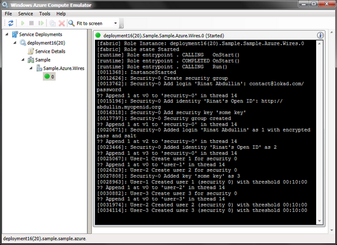

Lokad.CQRS could be used for learning about event centric development
(CQRS/DDD with event sourcing and ability to deploy in cloud and on-premises).
Gradually growing series of articles in bliki could provide some theoretical background.
You can also use Lokad.CQRS to jumpstart new projects by copying the entire SampleProject to your system and then modifying it to your needs. That's essentially how we start new projects at Lokad these days.
They say that Templify can help with
using projects as templates.
Core
Core projects include the most
important abstractions and concepts of Lokad.CQRS
- Lokad.CQRS.Portable - portability layer
- Lokad.CQRS.Azure - extend functonality for Windows Azure
- Lokad.CQRS.Http - simple embedded non-blocking HTTP server
Snippets
Snippets are blocks of simple code that illustrate some common concepts:
- HttpEndpoint - running Http server
- MailQuarantine - how to trap and report failing messages
- SimpleTimerService - timer that could be used for sagas
- PubSubRouter - how easy it is to write a basic pub/sub
Sample Project
This sample project is a console application that brings together:
- Contracts - core library with message contracts and domain interfaces
- Domain - Aggregates following principles of Domain-Driven Design with event sourcing
- Views - Contracts for persistent read models
- Projections - projections that transform events into views using specialized interfaces
- Wires - configuration code and some cross-cutting concerns
- Engine - run this console application to see domain in action
Sample Project /Azure
Open Lokad.CQRS.Sample.withAzure.sln to see Azure-specific binding
Sample Project /Tools
Following tools are included:
- Dsl - Contracts Dsl
- Audit - Event log viewer and view rebuilder
- SimpleTesting - Framework for testing AR+ES
After you have run Sample.Engine, try starting Audit and opening with it this file temp\sample-tapes\domain.tmd (located in folder where the engine run). You should see something like this image.
Columns in the left panel:
- Name of message contract (events are always blue and commands - green)
- Time message has been recorded
- Session (in this case - unigue ID of aggregate that is linked to messages)
- Type (color code that allows to relate same message types)
Obviously, you can tune colors as you need; it's all in the sources.
Right panel contains deserialized representation of the message(s) selected:
- Transport headers
- Human-readable representation (see
Describe class)
- Message contents
Second tab is used for automatically detecting and wiring all projections and then running the selected event stream through them:
Please keep in mind, that this is a fast rip from internal code, so a few buttons and functionality might not make full sense in the file-based context (i.e. domain log synchronization).
One of the primary purposes of this Sample is to enable and demonstrate cross-cloud
portability of projects developed using abstractions from Lokad.Cqrs.Portable.
That's how we use it at Lokad.
So to highlight this, we've added two projects: `Sample.Azure.Wires` and `Sample.Azure.Deploy`.
There is nothing really special, first project just wires SampleProject to run on Windows
Azure in a Worker Role, without touching existing domain code. Second project is the actual deployment,
that you need to Publish.
As expected, trace output is similar to the one we get from running sample in on-premises mode (via `Sample.Engine` console).
Obviously, this worker is wired to use native components of Windows Azure, instead of file system. These components (developed in Lokad and production-tested over the last few years in various scenarios) include:
- BlockBlobTapeStorage (used for append-only event streams on Azure)
- AzureAtomicStorage (used for storing documents, saga state and persistent read models)
- BlobStreamingStorage (used for streaming large BLOBs for Big DataProcessing)
- Azure Queues (for your message sending needs)

Lokad Contracts DSL is an optional console utility that you can run in the background. It tracks changes to files with special compact syntax (as mentioned in commands and events on bliki) and updates CS file. Changes are immediate upon saving file (and ReSharper immediately picks them). This is an improved version of Lokad Code DSL, it supports identities and can auto-generate interfaces for aggregates and aggregate state classes.
You can try this out by starting SampleProject\Tools\Dsl project and then changing SampleProject\Domain\Sample.Contracts\Messages.tt.
Current DSL code generates contracts classes that are compatible with DataContracts, ServiceStack.JSON and ProtoBuf.
Was
AddSecurityPassword?(SecurityId id, string displayName, string login, string password)
Became
[DataContract(Namespace = "Sample")]
public partial class AddSecurityPassword : ICommand<SecurityId>
{
[DataMember(Order = 1)] public SecurityId Id { get; private set; }
[DataMember(Order = 2)] public string DisplayName { get; private set; }
[DataMember(Order = 3)] public string Login { get; private set; }
[DataMember(Order = 4)] public string Password { get; private set; }
AddSecurityPassword () {}
public AddSecurityPassword (SecurityId id, string displayName, string login, string password)
{
Id = id;
DisplayName = displayName;
Login = login;
Password = password;
}
}